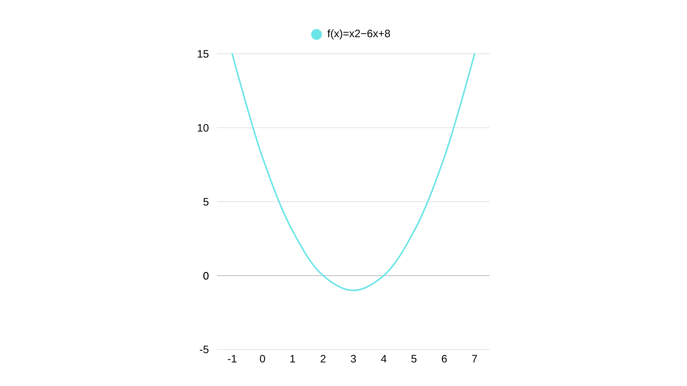

VIII. Imagem da Função Quadrática
A imagem de uma função é o conjunto de todos os valores que ela pode assumir em seu contradomínio.
No caso da função quadrática, a imagem depende diretamente da concavidade da parábola e do valor da ordenada do vértice (y_v).
- a > 0 → concavidade para cima → ponto de mínimo
A função atinge um valor mínimo no vértice. Todos os outros valores são maiores.
→ Imagem: { y ∈ ℝ | y ≥ y_v } - a < 0 → concavidade para baixo → ponto de máximo
A função atinge um valor máximo no vértice. Todos os outros valores são menores.
→ Imagem: { y ∈ ℝ | y ≤ y_v }
Exemplo: f(x) = x² – 4x + 3
→ a = 1 > 0 → concavidade para cima
→ x_v = –b/(2a) = 4/2 = 2
→ y_v = f(2) = 4 – 8 + 3 = –1
→ O menor valor da função é –1
Portanto, a imagem é: { y ∈ ℝ | y ≥ –1 }
IX. Eixo de Simetria
O eixo de simetria é a reta vertical que divide a parábola em duas partes iguais (simétricas).
Ele passa exatamente pelo vértice da parábola e tem equação:
x = x_v = –b / (2a)
Propriedade importante: pontos equidistantes do eixo de simetria têm a mesma imagem.
Exemplo: f(x) = x² – 6x + 8
→ x_v = –(–6)/(2·1) = 3
→ Eixo de simetria: x = 3
→ f(2) = 4 – 12 + 8 = 0
→ f(4) = 16 – 24 + 8 = 0
Note que 2 e 4 estão a 1 unidade de distância de x = 3 — e têm o mesmo valor!
X. Informações que Auxiliam a Construção do Gráfico
Para esboçar o gráfico de uma função quadrática com precisão, reúna estas informações:
- Concavidade: analise o sinal de a.
- Zeros (raízes): resolva ax² + bx + c = 0 usando Bhaskara.
- Vértice: calcule x_v = –b/(2a) e y_v = f(x_v).
- Ponto de interseção com o eixo y: quando x = 0, f(0) = c.
- Eixo de simetria: x = x_v.
- Imagem: use o valor de y_v e o sinal de a.
Exemplo completo: f(x) = –x² + 4x + 5
• a = –1 < 0 → concavidade para baixo
• Zeros: Δ = 16 + 20 = 36 → x = [–4 ± 6]/(–2) → x₁ = –1, x₂ = 5
• Vértice: x_v = –4/(–2) = 2 → y_v = –4 + 8 + 5 = 9 → (2, 9)
• Cruzamento com y: (0, 5)
• Eixo de simetria: x = 2
• Imagem: { y ∈ ℝ | y ≤ 9 }
XI. Sinal da Função Quadrática
Estudar o sinal da função quadrática significa determinar para quais valores de x temos:
• f(x) > 0 (positivo)
• f(x) = 0 (nulo)
• f(x) < 0 (negativo)
O comportamento depende do número de raízes e da concavidade.
• Caso 1: Duas raízes reais distintas (Δ > 0)
A parábola corta o eixo x em dois pontos.
- a > 0: negativa entre as raízes, positiva fora.
- a < 0: positiva entre as raízes, negativa fora.
• Caso 2: Uma raiz real (Δ = 0)
A parábola toca o eixo x em um único ponto (vértice).
- a > 0: f(x) ≥ 0 para todo x (zero no vértice)
- a < 0: f(x) ≤ 0 para todo x (zero no vértice)
• Caso 3: Nenhuma raiz real (Δ < 0)
A parábola não toca o eixo x.
- a > 0: f(x) > 0 para todo x
- a < 0: f(x) < 0 para todo x
Exemplo: f(x) = x² – 6x + 8 (a > 0, raízes 2 e 4)
→ f(x) > 0 para x < 2 ou x > 4
→ f(x) = 0 para x = 2 ou x = 4
→ f(x) < 0 para 2 < x < 4
💡 Dica Final: Como Estudar o Sinal Passo a Passo
- Identifique a, b e c.
- Calcule Δ e encontre as raízes (se existirem).
- Determine a concavidade (sinal de a).
- Use os casos acima para definir os intervalos.
- Esboce um esquema rápido com sinais (+ e –).
🧠 Conclusão
Dominar a imagem, o eixo de simetria e o sinal da função quadrática permite interpretar gráficos com precisão, resolver inequações do 2º grau e modelar situações reais como lucro máximo, altura de projéteis e trajetórias parabólicas.
Com esses conceitos, você está pronto para avançar com segurança na matemática do Ensino Médio!